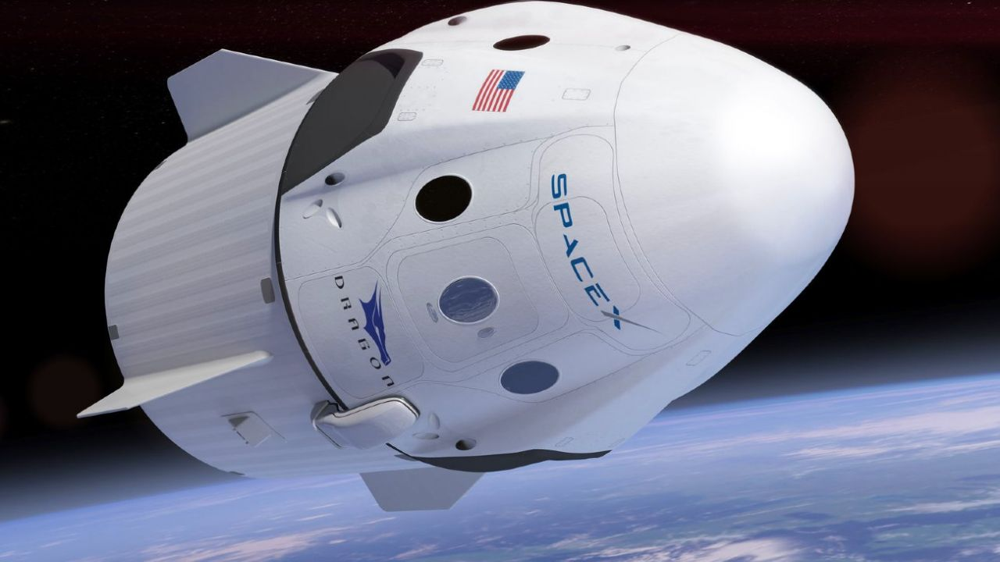

Apolo 11
Esta aeronave lleva consigo el titulo de ser la primera nave que logro llevar a los humanos Buzz Aldrin y Neil Armstrong a la Luna, en el año 1969.
.
.
Crewdragon IV
Es la primer aeronave reutilizable en enviar tripulantes hacia la Estacion Espacial Internacional (IES), fabricada por Space X, la cual es una empresa privada de EEUU y la primera en lograr lo acontencido.